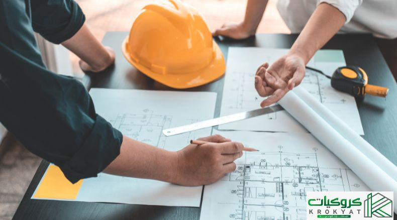
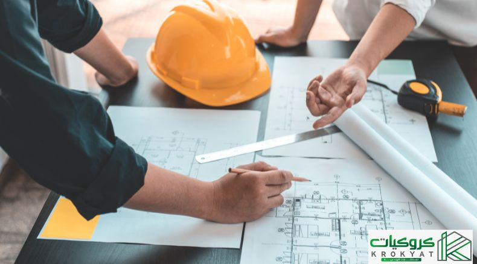

Welcome to Renovation
Renovation Management: Role, Importance, and Key Stages
IntroductionRenovation management is the process of planning, organizing, executing, and monitoring renovation projects to enhance existing structures while maintaining quality, cost efficiency, and timely completion. This management is essential in ensuring successful upgrades, whether for residential, commercial, or industrial properties.
Importance of Renovation Management
--> Enhancing Efficiency: Optimizes the use of materials and minimizes unnecessary expenses.
--> Improving Aesthetics and Functionality: Upgrades outdated designs and enhances usability.
--> Reducing Risks: Identifies potential structural issues and implements necessary solutions.
--> Budget Control: Ensures cost-effective renovations while maintaining quality.
--> Ensuring Safety: Addresses safety concerns and compliance with modern building codes.
Key Stages of Renovation Management
--> Assessment and Planning: Evaluates existing conditions, defines goals, and estimates costs.
--> Design and Approval: Develops renovation plans and obtains necessary permits.
--> execution: Implements the renovation while minimizing disruption.
--> Monitoring and Quality Control: Ensures compliance with specifications and industry standards.
--> Final Inspection and Handover: Conducts a thorough review before project completion.
Roles of Renovation Management
--> Developing strategic renovation plans.
--> Coordinating with contractors, designers, and stakeholders.
--> Overseeing the renovation process to ensure efficiency and compliance.c
--> Ensuring safety measures are followed throughout the project.
--> Addressing unexpected challenges that may arise during renovations.